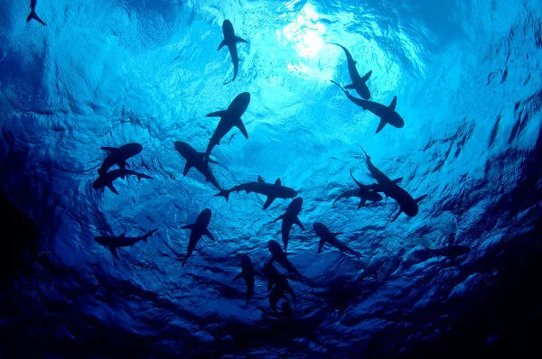

"Tubarão é um nome popular usado para nomear um tipo de peixe do grupo dos condrictes, ou seja, dos que possuem esqueleto predominantemente formado por cartilagem. Os tubarões são bastante conhecidos, principalmente, como grandes predadores, mas essa característica não pode ser aplicada a todos os representantes desse grupo de animais."Fonte: https://brasilescola.uol.com.br/animais/tubarao.htm
Crédito da Imagem: shutterstock